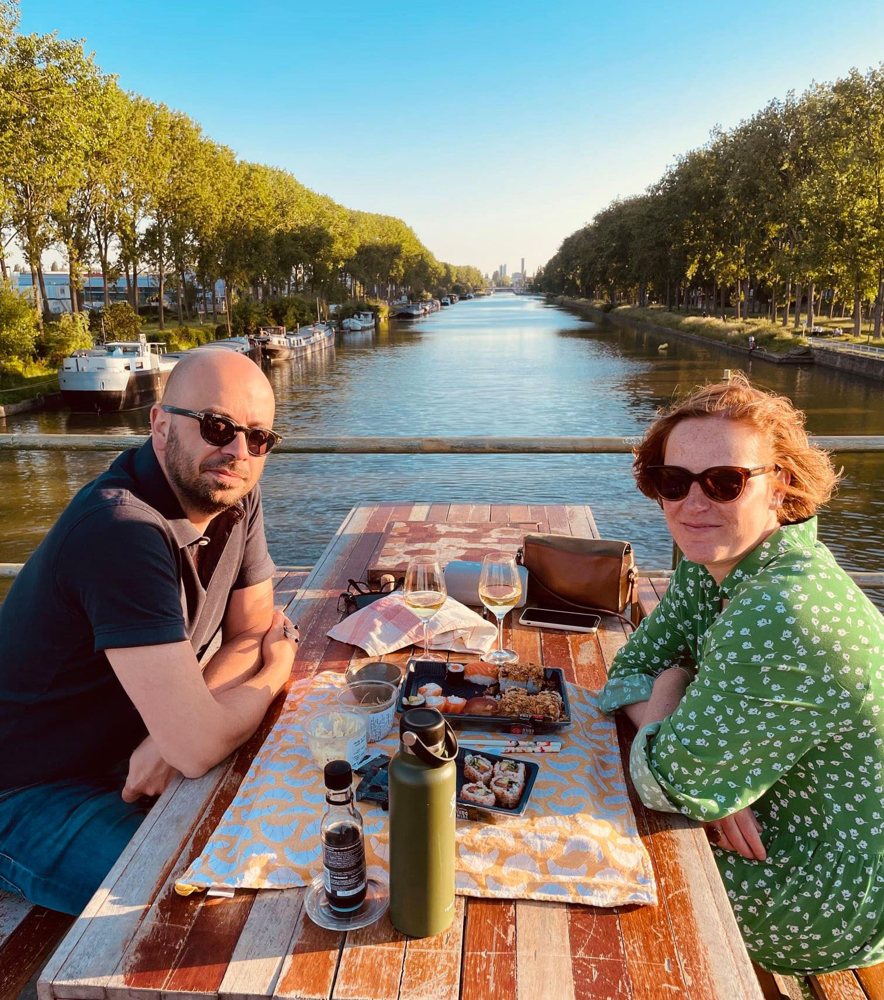

LES AMIS DU PONT #1

.png)
.png)
Onlangs hebben we Gianna, Ward en hun hondje Dali ontmoet. Gianna is Italiaanse, Ward is geboren in Gent. Ze leerden deze plek kennen toen ze in Saint-Guidon woonden. Vandaag wonen ze in la Roue, maar ze komen nog heel regelmatig naar de brug, om te spelen met hun hond Dali, om te genieten van de zon en het uitzicht op het kanaal en de Brusselse skyline.
LES AMIS DU PONT #2
Sur Le Pont brengt de vrienden van de Pierre Marchant Bridge virtueel samen! Winston is Zweeds, groeide op in Engeland maar verhuisde onlangs naar Brussel. Hij woont op tien minuten lopen van de brug en je treft hem hier als de zon schijnt, genietend van het weer en een goed boek.
.png)
LES AMIS DU PONT #3

.png)
Sur Le Pont wil vrienden van de Pierre Marchant-brug online samenbrengen. Vandaag stellen we je voor aan Baptiste, Julien en Ilyas, drie vrienden die in Kuregem wonen. Ze ontmoeten elkaar vaak op de brug voor een spelletje backgammon.
LES AMIS DU PONT #4

Onlangs hebben we vriendinnen Anna en Flora ontmoet. Anna woont in het centrum van Brussel, Flora en haar hond Poutchi in Elsene. Ze vinden het heerlijk om bij te praten door langs het kanaal te wandelen. En natuurlijk is er aan het einde van elke wandeling altijd onze mooie brug voor een moment van rust en een drankje.
.png)
LES AMIS DU PONT #5
Jef, Katrien, Arnout en Djaina ontmoeten elkaar ook regelmatig op onze brug. Hun verhaal loopt parallel met dat van talloze anderen die we de afgelopen weken ontmoetten: ze ontdekten deze plek vooral tijdens de lockdowns, waarin het gebrek aan kwalitatief groen in onze stad zo duidelijk naar voren kwam. Er is het afgelopen jaar veel gesproken over de behoefte aan perspectief, en laten we eerlijk zijn, perspectief is er hier in overvloed. Daarnaast doemt op het einde een zomer op met minder zorgen en zelfs een buitenzwembad.
.png)
LES AMIS DU PONT #6

Ook Wim uit Halle en Lore uit Sint-Gillis weten dat onze brug de ideale plek is voor een romantisch diner bij zonsondergang.
LES AMIS DU PONT #7

.png)
Dit is Joe. Hij bracht een paar dagen door in onze stad, waar hij sprak over trans-Atlantische betrekkingen, klimaatverandering en de verlaging van importtarieven op bier en wafels. Tijdens een reis vol ontmoetingen vond hij de tijd om onze brug te bezoeken, om na te denken over de symbolische betekenis van bruggen, aangezien ze staan voor gelijkheid tussen twee partijen en de bereidheid om de andere kant te bereiken.
LES AMIS DU PONT #8

Vanavond is de brug vzw Stoepkrijt welkom geheten. Al 5 jaar zorgt een geweldig team rond Ben, Dries, Jonathan, Pieter & Jonas uit Molenbeek en Vorst ervoor dat mensen samen kunnen komen om wedstrijden van de Rode Duivels op groot scherm te volgen. Deze avond hebben de stoepkrijten de brug als plek uitgekozen. De sfeer was fantastisch, ook na de wedstrijd. Bedankt voor deze mooie momenten!
LES AMIS DU PONT #9
Bruno Steinrücke is een van de oprichters en huidige voorzitter van Semaphore, het enige jongerencentrum op het water in België. De woonboot ligt naast de Marchantbrug aan de Biestebroeckkaai. Hij woont ook in een schip gelegen op de Digue du Canal, en is penningmeester van de vereniging van de bewoners van de schepen. Hij is dan ook al tientallen jaren aan beide kanten van de brug betrokken.
LES AMIS DU PONT #10

.png)
Pieter woont in Kuregem. Onze brug is een vaste stop op de hardlooptraining langs de gracht die hij regelmatig onderneemt.
LES AMIS DU PONT #11

Maya en Flavien zijn net verhuisd naar de Rue de la Gaité. Hun vrienden Bilou, Emma, David, Lucie, Hichem kwamen hen helpen met het verplaatsen van wat meubels naar hun nieuwe huis. Ze delen een biertje in de zon. Een betere setting kunnen ze zich niet wensen!
.png)
LES AMIS DU PONT #12

Ah, die twee hebben echt ons hart gestolen... Javi (Sint-Gillis) en Marie Cécile (Vorst) hadden hun eerste blind date op onze brug. We weten niet of de date een succes was, maar we weten zeker dat ze een van de meest romantische plekjes van de stad hebben ontdekt.
LES AMIS DU PONT #13
.png)
Pieter woont in Kuregem, op een kwartiertje wandelen van onze brug. Het is de dichtstbijzijnde openbare groene ruimte voor hem, en daarom strijkt hij op zomeravonden vaak neer op deze bijzondere plek, met een goed boek of wat vrienden als gezelschap.
LES AMIS DU PONT #14

Joaquin is een van de vele bewoners die op zondag zonder auto naar de brug kwamen. Hij is Portugees, woont aan de Chaussée de Mons en komt regelmatig op de brug wandelen.
LES AMIS DU PONT #15

.png)
Laura verhuisde enkele maanden geleden van Sint-Gillis naar Kuregem. Sindsdien is ze ook een vaste bezoeker van de brug, waar ze geniet van het uitzicht of een goed boek (voor de geïnteresseerden: nu leest ze Knut Hamsun, in het Noors hierboven).
LES AMIS DU PONT #16

Ook Casimir, Milo, Edgar en Robel zijn regelmatig op onze brug te vinden, waar ze bijkomen van een lange schooldag of een intensieve klimtraining in Petite île.
LES AMIS DU PONT #17

.png)
Joost, Geertje en Gustav steken meerdere keren per dag de brug over, te voet of met de fiets.